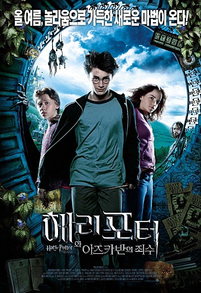
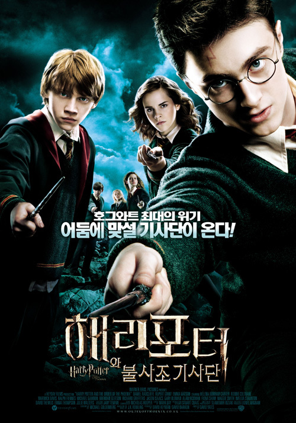

해리포터 시리즈



해리의 부모님을 해친 시리우스 블랙에 대한 이야기가 나오고, 해리가 모든 의문점들의 풀고 자신과 시리우스 블랙 사이에 얽힌 비밀을 파헤치는 내용입니다.
해리포터와 아즈바칸의 죄수
해리의 부모님을 해친 시리우스 블랙에 대한 이야기가 나오고, 해리가 모든 의문점들의 풀고 자신과 시리우스 블랙 사이에 얽힌 비밀을 파헤치는 내용입니다.

해리포터와 불의 잔
볼드모트의 악몽이 점점 현실로 다가오는 해리포터를 주변에서 도와주려 하지만 결국 모든 문제는 자신만이 해결할 수 있다. 이 문제를 해리포터는 잘 해결 할 수 있을지의 내용입니다.

어둠의 마법사들이 해리를 불사조 기사단의 비밀 장소로 데리고 가 부모님의 과거 모습을 만납니다. 그리고 밤마다 불길한 사건을 예견하는 악몽을 꾸면서 볼드모트와의 대결이 멀지 않음을 예고하는 내용이다.
해리포터와 불사조 기사단
어둠의 마법사들이 해리를 불사조 기사단의 비밀 장소로 데리고 가 부모님의 과거 모습을 만납니다. 그리고 밤마다 불길한 사건을 예견하는 악몽을 꾸면서 볼드모트와의 대결이 멀지 않음을 예고하는 내용이다.

해리포터와 혼혈왕자
어둠의 세력이 도욱 강력해져 머글 세계와 호그와트까지 위협해옵니다. 덤블도어 교수는 다가올 전투에 대비하기 위해 해리포터와 대장정의 길을 나서고 남겨진 결전을 위한 최후의 미션, 볼드모트와 해리포터에 얽힌 치명적인 비밀, 선택된 자만이 통과할 수 있는 대단원을 향한 본격적인 비밀이 시작되는 내용이다.

해리포터와 죽음의 성물 1부
덤블도어 교장의 죽음 이호, 마법부는 죽음을 먹는 자들에게 점령당하고 호그와트는 위기에 빠집니다. 이에 해리, 론, 헤르미온느는 볼드모트를 물리칠 수 있는 유일한 단서이자 그의 영혼이 담신 '성물' 호크룩스를 찾기 위한 여정에 나서는 내용입니다.

해리포터와 죽음의 성물 2부
덤블도어 교장이 남긴 '죽음의 성물'의 단서를 쫓던 해리 포터는 볼드모트가 그토록 찾던 절대적인 힘을 가진 지팡이의 비밀을 통해 드이어 마지막 퍼즐을 완성합니다. 해리를 주축으로 한 불사조 기사단과 죽을을 먹는 자들 간의 마법전투가 벌어지며 호그와트는 거대한 전쟁터로 변하는데 마지막 결말은 어떻게 될지 영화로 확인해보세요